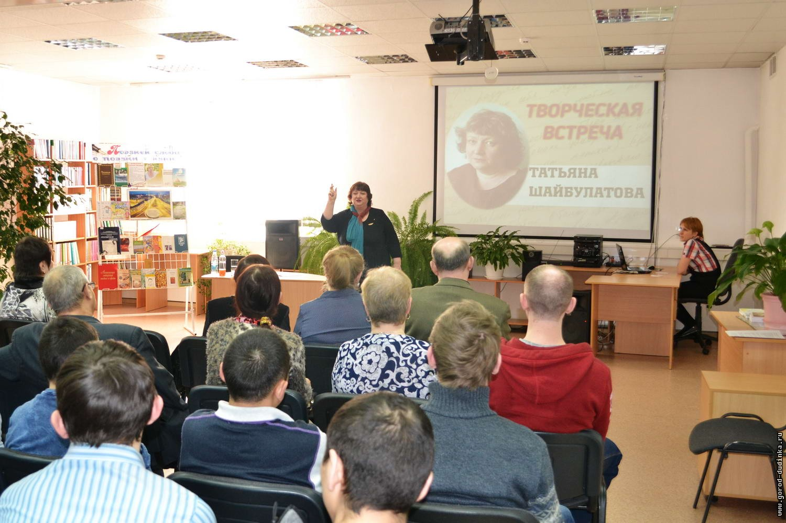
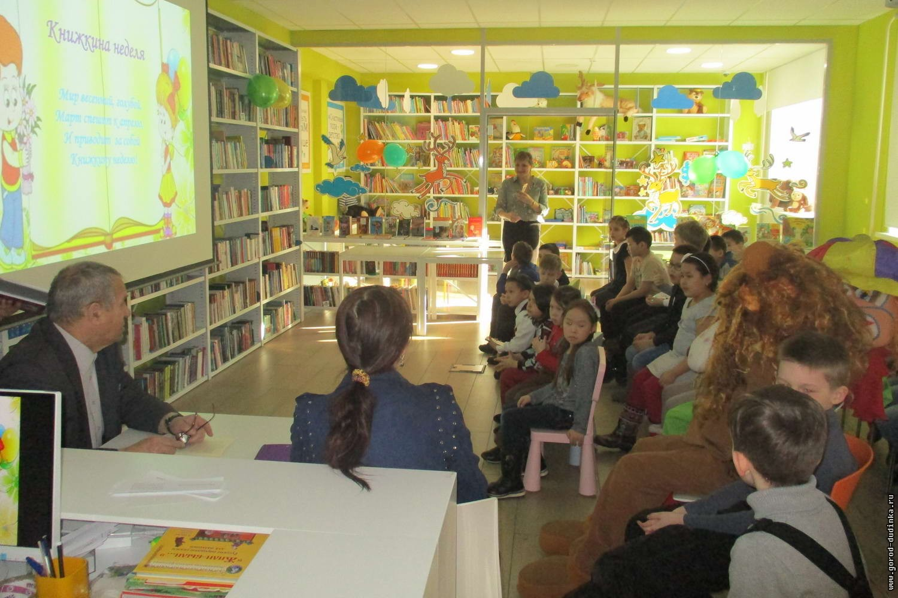
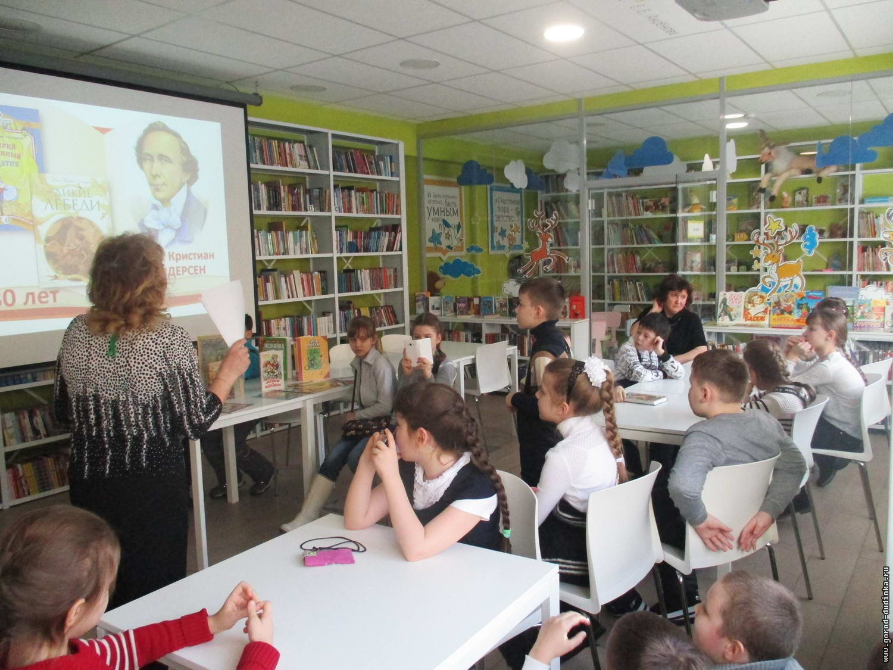

Новые поступления
События
Новости
-
В Дудинке презентовали книгу поэтессы-норильчанки
29 марта 2018Подробнее22 марта в центральной библиотеке состоялись презентация книги «Цикорий с мёдом и корицей» и встреча с её автором, норильским литератором Татьяной Шайбулатовой. Поэтическое путешествие в мир писателя совершили студенты Таймырского колледжа и дудинцы, интересующиеся творчеством гостьи. Книжную выставку «Поэзией слова — о поэзии жизни», библиотекари дудинской ЦБС подготовили, собрав материалы о жизни и творчестве автора.
-
Городская библиотека развивает новые формы работы
29 марта 2018ПодробнееГородская библиотека им. Е.Е. Аксеновой продолжает оправдывать возложенную на неё функцию информационно-библиотечного центра, призванного объединить в своих залах дудинцев всех возрастов. Так, 26 марта в библиотеке состоялся праздник-открытие Недели детской книги «Это книги — вам, читатели, фантазёры и мечтатели». В этот день юных посетителей встречали ростовые куклы Пингвин, Лев и Клоун. В зале детской литературы была организована площадка «Юный художник». Здесь под руководством преподавателя детской школы искусств им. Бориса Молчанова Марии Самойловой проходил мастер-класс Кота Учёного по рисованию. В зале юношеской литературы работала секция «Литературное знакомство», на которой дудинские литераторы Елена Градинарова и Виктор Калинин познакомили ребят со своими произведениями. В течение всей недели в городской библиотеке юных читателей ждут встречи со сказочными героями, литературные викторины и конкурсы.
-
Дудинские школьники совершили путешествие в «Чудесную страну»
22 марта 2018Подробнее19 марта в городской библиотеке им. Е. Е. Аксеновой состоялся день открытых дверей, в рамках которого сотрудники библиотеки Жанна Шнайдер и Светлана Гордеева провели для учащихся 2 «А», 3 «Б» и 7 «Б» классов дудинской школы № 3 экскурсию «Чудесная страна — библиотека». Во время нее школьникам рассказали о назначении залов обновленной библиотеки, о литературе, размещённой в каждом отделе и об услугах, ставших доступными после реконструкции.